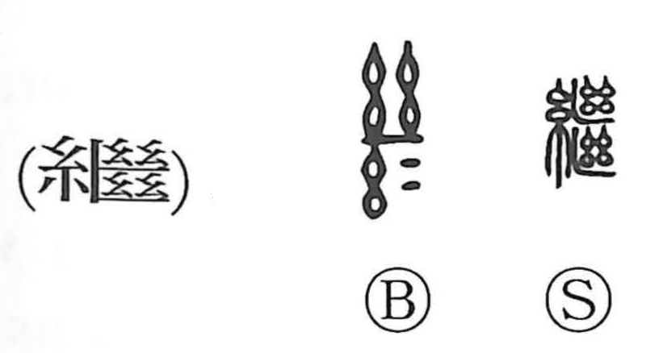

継

Kun: tsugu, tsugi | On: kei
to succeed ・ to inherit ・ to continue ・ to connect ・ to mend
Explanation
A phono-semantic character. The ancient form shows the threads spread on a loom being cut into two, and another element portrays threads severed by an axe. With 糸 “thread” added as the semantic component and a phonetic that yields the on reading kei, the character originally evoked joining cut threads—mending and connecting. From this concrete image it came to mean carrying something forward without interruption: to continue what preceded, to take over and succeed to an inheritance or role.